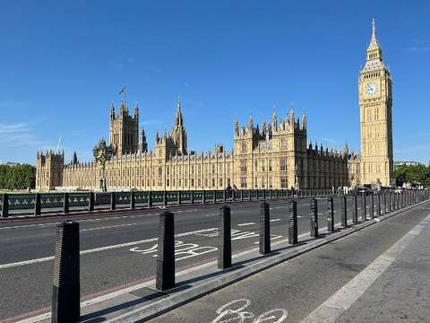

Лондон
Велика Британія, Англія

Коротка характеристика
Лондон — столиця Великої Британії та одне з найбільших міст Європи з населенням близько 9 мільйонів людей. Місто заснували римляни як Лондиніум у I столітті нашої ери на березі Темзи.
Сьогодні Лондон — світовий фінансовий і культурний центр, де середньовічні пам'ятки стоять поруч із сучасними хмарочосами.
Чому я обрав це місто
Лондон вражає масштабом і різноманіттям: за один день можна побачити Тауер, найбільші музеї світу та сучасні райони.
Цікаві факти
- Лондонське метро відкрили у 1863 році — це найстаріший метрополітен у світі.
- «Біг-Бен» — це назва великого дзвону; сама вежа з 2012 року називається Вежею Єлизавети.
- Вхід до Британського музею, заснованого у 1753 році, безкоштовний.
- Тауер і Вестмінстерський палац внесено до Списку світової спадщини ЮНЕСКО.
Визначні місця
Вестмінстерський палац і Біг-Бен
Місце засідань британського парламенту на березі Темзи.
Тауер
Середньовічна фортеця, де зберігаються коронаційні коштовності.
Британський музей
Один із найбільших історичних музеїв світу.
Тауерський міст
Розвідний міст XIX століття, один із символів міста.
Моя оцінка
Високо — за історію та музеї. Мінус бали за ціни та часто похмуру погоду.
Додаткова інформація
Стаття «Лондон» у Вікіпедії (відкривається в новій вкладці).